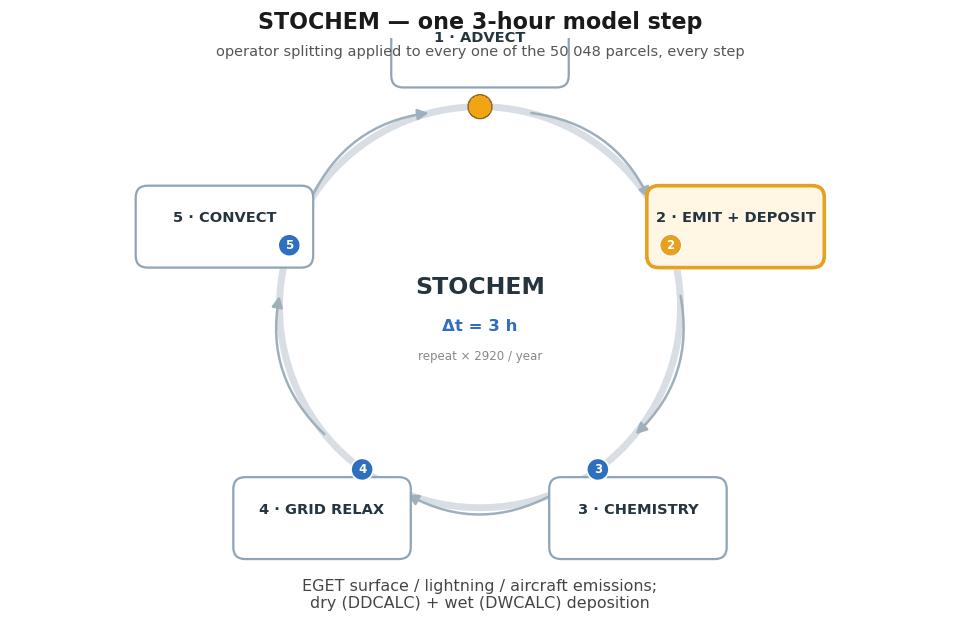
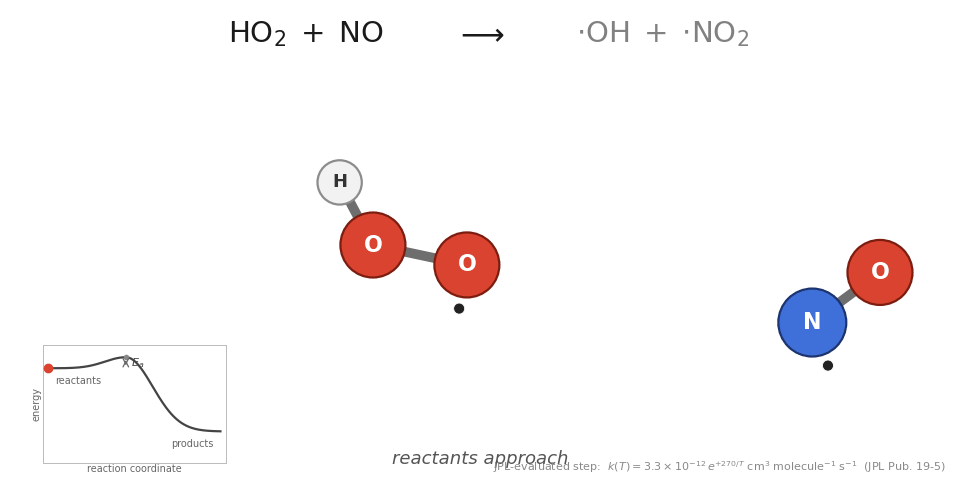
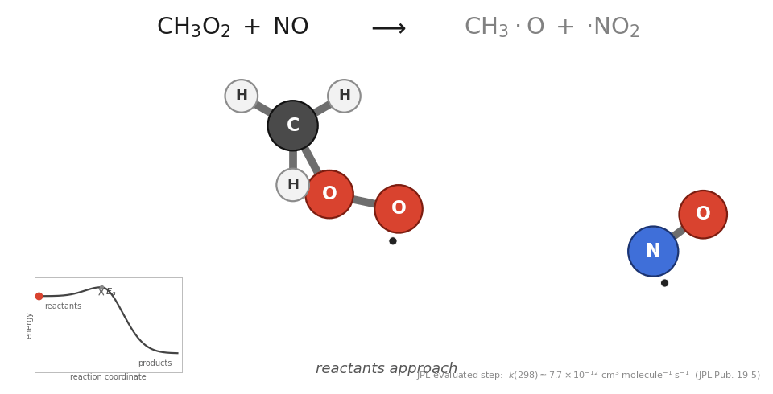
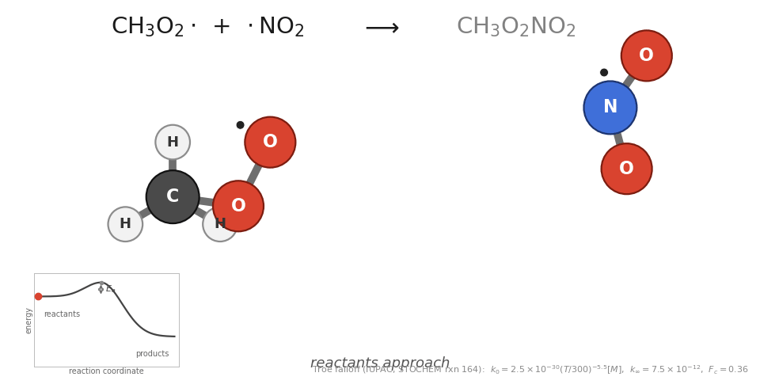
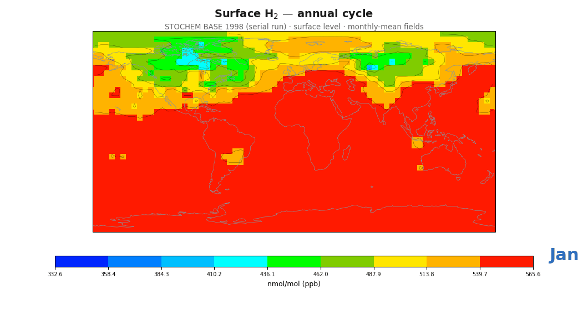
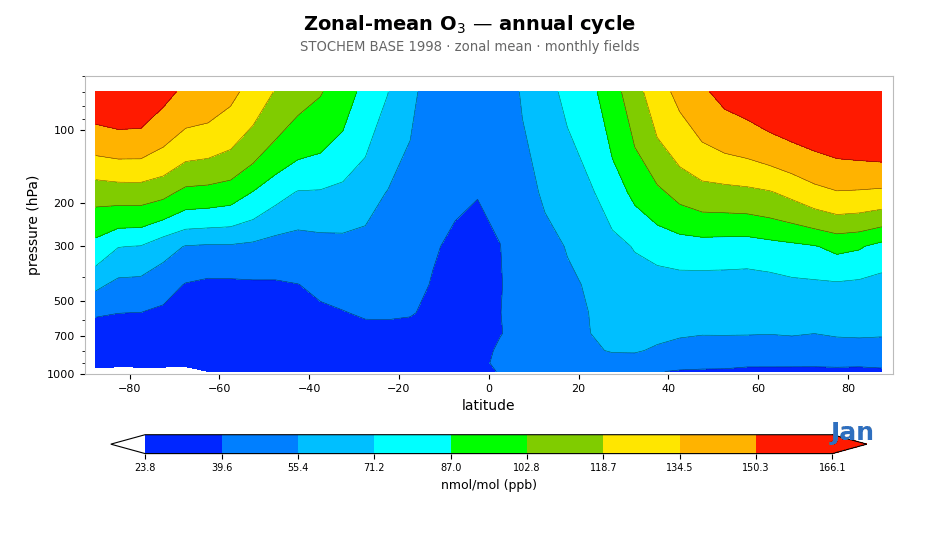

How STOCHEM-CRI works
A global three-dimensional Lagrangian tropospheric chemistry–transport model
Met Office (Bracknell) · University of Bristol CRI mechanism · Collins, Stevenson, Johnson & Derwent (1997), J. Atmos. Chem. 26
The model in one sentence
Follow ~50,000 individual air parcels as the analysed winds blow them around the troposphere — and integrate a detailed chemical mechanism inside every single one.
Eulerian vs Lagrangian

Eulerian: fixed boxes, flux divergences, numerical diffusion. Lagrangian: parcels ride the wind — advection is exact.
Why it works: the material derivative
- The
u·∇cterm — the hard part — vanishes: the parcel is the advection - No numerical diffusion, no negative mixing ratios, sharp plumes stay sharp
- All that remains is sources & sinks: emissions, chemistry, deposition
- Price: real turbulent mixing must be added back — stochastically
One timestep, end to end

Stochastic mixing — the "STO"
- Pure advection never mixes neighbouring air masses
- STOCHEM emulates sub-grid diffusion by randomly exchanging parcels within each grid cell
- Every cell's mean is therefore a statistical quantity — runs are ensemble members, not bit-identical answers
- Validated against 222Rn (Stevenson et al. 1998); convection via GCM mass fluxes (Collins et al. 2002)
Emissions & deposition
Sources
- Surface: anthropogenic, biomass burning, biogenic, ocean, soils → BL cells
- Aircraft NOx & lightning NOx: altitude-resolved 3-D fields (
ACNOX,LNOX)
Sinks
- Dry deposition: species/surface-dependent velocities, lowest layer
- Wet deposition: large-scale + convective scavenging
- Both written as fluxes:
.bud/.tot
Chemistry: the CRI mechanism
CRI = Common Representative Intermediates — a systematically reduced VOC scheme benchmarked against the MCM
RN·O₂ (alkane) · RU·O₂ (unsaturated) · RA·O₂ (aromatic) ·
RTX·O₂ (terpene) → CARB/UCARB/UDCARB carbonyls → O₃, PAN, SOA, CO₂
Jenkin, Watson, Utembe & Shallcross (2008–2010), Atmos. Environ.
The ozone-producing steps


HO₂ + NO → OH + NO₂ · CH₃O₂ + NO → CH₃O + NO₂ — peroxy radicals convert NO→NO₂; NO₂ photolysis makes O₃. JPL-evaluated rates.
Nitrogen reservoirs & transport
- PAN (acyl peroxy nitrates): cold-temperature NOx storage; long-range pollution transport (Khan et al. 2017)
- RO₂NO₂ (non-acyl peroxy nitrates, 45 species): stable only in the cold upper troposphere — raises O₃, OH, NO₃ burdens (Khan et al. 2020)
- HNO₃: terminal sink via OH+NO₂, removed by deposition

Real model output


Monthly surface H₂ and zonal-mean O₃ from real
stoch3d.dat output.
What STOCHEM has been used for
- Tropospheric O₃ budgets & NOx controls (Collins 1997)
- Aircraft NOx impacts (Stevenson 1997)
- Indirect GWPs of VOCs (Derwent 2001, Collins 2002)
- Global H₂ budgets & the hydrogen economy (Sanderson 2003 → Derwent 2025)
- CRI-era: PAN, acetone, alkyl nitrates, NO₃, RO₂·H₂O, RO₂NO₂, SOA (Utembe & Khan 2010–2020)
32-paper bibliography, 1997–2025, on the references page
Strengths & honest caveats
Strengths
- Exact advection, mass-conserving parcels
- Detailed CRI chemistry at global scale
- Parcel histories ideal for plume/attribution studies
- Trivially parallel (OpenMP)
Caveats
- Stochastic sampling noise in sparse cells
- Coarse analysis grid vs modern Eulerian CTMs
- Aged meteorological drivers (offline model)
- Spin-up needed from climatological cold start
Learn more
Interactive schematics, mechanism explorer, full bibliography:
the STOCHEM-CRI explainer site — model · chemistry · visualisations · code tour · references
All interactive figures are labelled schematics; GIFs are rendered from real model code/output or explicit reaction specs.